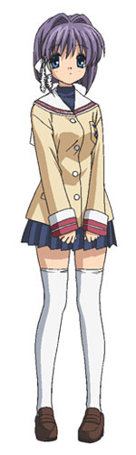
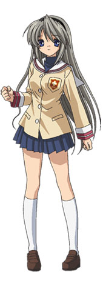
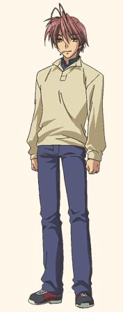

Персонажи

Считается школьным прогульщиком и бунтарем. Из-за ссоры с отцом получил травму плеча, которая разрушила его спортивную карьеру в баскетболе и заставила замкнуться в себе. Потерял цель в жизни и погрузился в рутину, пока не встретил Нагису. За маской циника и любителя саркастичных розыгрышей скрывается глубоко ранимый, верный и самоотверженный человек, готовый брать на себя чужую боль и решать чужие проблемы.

Добродушная и тихая девушка, оставшаяся на второй год из-за хронической болезни. Из-за своей нерешительности часто сомневается в себе, но обладает удивительной внутренней стойкостью. Обожает странный детский сериал «Большая семья данго» и мечтает возродить школьный театральный кружок. Нагиса становится тем самым центром притяжения, который объединяет абсолютно разных людей и помогает Томое снова найти смысл жизни.

Единственный друг Томои на начало истории, выгнанный из футбольной секции за драку. Легкомысленный, эксцентричный и леньтяй, постоянно попадающий в комичные ситуации и служащий главным объектом для побоев и шуток. Несмотря на поверхностное поведение, Ёхэй искренне любит свою младшую сестру Мэй и в решающие моменты способен проявить настоящую мужественность и преданность дружбе.

Энергичная, вспыльчивая и острая на язык девушка с боевым характером, мастерски метающая учебные словари в обидчиков. Была старостой в классе Томои и Ёхэя в прошлом году. Несмотря на внешнюю агрессию, она отлично готовит и безумно опекает свою сестру-близнеца Рё. Внутри Кё прячет глубокие неразделенные чувства, которые готова подавить ради счастья сестры.

Староста класса Томои в выпускном году. В противоположность своей сестре Кё, Рё невероятно тихая, застенчивая и мягкая. Увлекается гаданием на картах Таро, хотя ее предсказания почти никогда не сбываются точно. Влюблена в Томою и, несмотря на свою скромность, находит в себе силы бороться за свои чувства, проявляя удивительное эмоциональное взросление.

Первогодка, известная своей прошлой репутацией сильнейшей уличной хулиганки. Обладает сокрушительной физической силой и владеет боевыми искусствами. Томоё решила полностью изменить свой образ жизни и стремится стать президентом студсовета, чтобы спасти сакуровую аллею ради своего младшего брата. Она целеустремленна, собранна и пользуется огромным уважением в школе.

Входит в десятку лучших учащихся страны по результатам стандартизированных тестов, из-за чего ей разрешено пропускать уроки и заниматься в библиотеке. Увлекается скрипкой (хотя играет ужасно) и вырезает интересные статьи из книг. За абстрагированностью и детским поведением скрывается тяжелейшая психологическая травма, связанная с гибелью родителей-физиков и потерянными воспоминаниями детства.

Странная и одинокая девушка, которую Томоя встречает в пустом классе за вырезанием морских звезд из дерева. Когда она думает о морских звездах, то входит в состояние полного трансa. Фуко раздает свои поделки ученикам, чтобы зазвать их на свадьбу своей любимой сестры Коко. История Фуко несет в себе мистическую и одновременно глубоко печальную тайну.

Бывший профессиональный актер театра, бросивший карьеру ради спасения жизни дочери и открывший собственную пекарню. Вспыльчивый, шумный и обожающий бейсбол. Постоянно устраивает театральные сцены на улице, когда его жена расстраивается из-за критики ее выпечки. Несмотря на детское поведение, Акио — мудрый, сильный и невероятно заботливый отец, ставший для Томои настоящим ориентиром.

Бывшая школьная учительница, оставшаяся дома ради семьи. Выпекает крайне странный и неэкспериментальный хлеб, из-за нелестной оценки которого убегает в слезах. Санаэ управляет домашней репетиторской школой для детей. За ее юной внешностью и чувствительностью скрывается невероятный душевный стержень: именно она поддерживает всю семью в самые темные и трагичные времена.